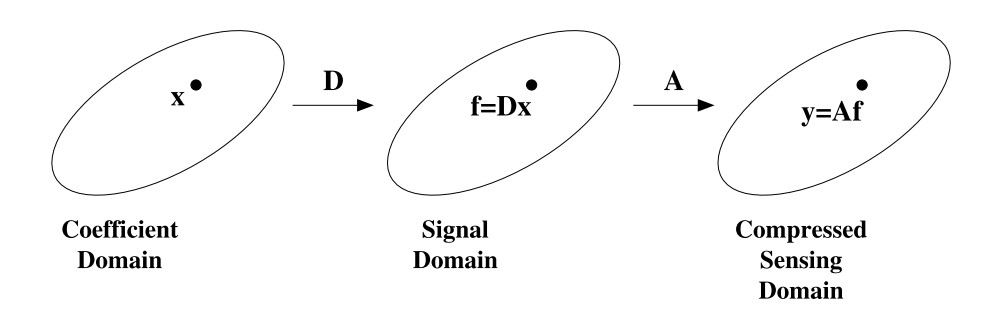

[参考文献] Candes, Emmanuel J., Yonina C. Eldar, Deanna Needell, and Paige Randall. “Compressed sensing with coherent and redundant dictionaries.” Applied and Computational Harmonic Analysis 31, no. 1 (2011): 59-73.
Problem
$x \in \mathbb{R}^d, \quad f = Dx \in \mathbb{R}^n, \quad y = Af + z \in \mathbb{R}^m, \quad \lVert z \rVert \leq \varepsilon$

(P)
Definitions
$D$-RIP
Let $\Sigma_s$ be the union of all subspaces spanned by all subsets of $s$ columns of $D$,
The measurement matrix $A$ is said to be obey the restricted isometry property adapted to $D$ (D-RIP) with constant $\delta_s$ if
Theorem
Let $(D_i)_{i=1}^d \subset \mathbb{R}^n$ be an arbitrary tight frame with the associated synthesis operator $D = (D_1, \cdots, D_d ) \subset \mathbb{R}^{n \times d}$, and let $A$ be a $m \times n$ measurement matrix satisfying $D$-RIP with $\delta_{2s} < 0.08$. Then the solution of (P1) satisfies
where the constants $C_0$ and $C_1$ may only depend on $\delta_{2s}$.
Proof
Notations
$h = f - \hat{f}.$
Let $T$ be a index set and denote $D_T$ as the matrix $D$ restricted to the columns indexed by $T$. In other words,
We also write $D_T^*$ to mean $(D_T)^*$.
Let $T_0$ denote the index of the largest $s$ coefficients of $D^∗ f$ in magnitude:
where $(D^*f)_s$ is the the best $s$-sparse approximation of $D^*f$.
引理 1 (Cone constraint)
The vector $D^∗h$ obeys the following cone constraint,
由于 $f$ 和 $\hat{f}$ 都是可行解，而且 $\hat{f}$ 为最优值，所以目标函数值必满足 $\lVert D^*f |_1 \geq \rVert D^* \hat{f} |_1$。另外注意到对任意 $g \in \mathbb{R}^n$，有
因此，
于是引理 1 得证。
Notations
- Divide the index set $T_0^c$ into sets of size $M$ (to be chosen later) in order of decreasing magnitude of $D^∗_{T_0^c} h$.
引理 2 (Bounding the tail)
Setting
we have the following bound,
根据指标集 $T_j$ 的构造，$D^*_ {T_{j+1}}h$ 中任意一个非零元素的绝对值至多为 $D^*_ {T_{j}}h$ 中非零元素绝对值的平均值，即
于是
再注意到 $T_i$ 之间两两不交，从而有
根据引理 1，可以进一步得到
其中最后一步使用了 Cauchy–Schwarz 不等式。
Notations
- $T_{01} = T_0 \cup T_1$.
引理 3 (Consequence of $D$-RIP)
The following inequality holds,
由于 $f$ 和 $\hat{f}$ 都是可行解，
根据定理条件，$D$ 为 tight frame，于是 $DD^* = \operatorname{Id}$，另外注意到当指标集 $T$ 与 $T’$ 不交时，$D_TD_{T’}^* = 0$，于是
由于 $D_{T_{01}}$ 中至多有 $(s + M)$ 列来自 $D$，其余为非零列，于是 $\forall g \in \mathbb{R}^d$，有 $D_{T_{01}}g \in \Sigma_{M+s}$，特别地，$D_{T_{01}}(D_{T_{01}}^*h) \in \Sigma_{M+s}$。类似可知，$\forall j \geq 2$，有 $D_{T_{j}} (D_{T_{j}}^{*}h) \in \Sigma_M$。因此，由于 $A$ 满足 $D$-RIP 条件，
由于 $D$ 为 tight frame，$D^*$ 为等距映射，从而
于是在算子范数意义下有 $\forall k \geq 0, \ \lVert D_{T_k} \rVert = \lVert D_{T_k}^* \rVert \leq 1$，因此，根据引理 2，
引理 4 (Bounding the error)
The error vector $h$ has norm that satisfies
由于$D^*$ 为等距映射，
其中最后一个不等号利用了引理 2 的结论。
定理证明
注意到对任意的 $u, v \in \mathbb{R}$ 以及 $c > 0$，下面的不等式成立，
假设 $c_1, c_2 > 0$ 为待定常数，在引理 3 的证明中，已经推导了 $\lVert D_{T_{0}}^*h \rVert_2 \leq \lVert h \rVert_2$，因此根据引理 4 的结论，
整理之后并利用 $\forall u,v > 0$，有 $u^2 + v^2 \leq (u+v)^2$，
因此当 $c_1, c_2$ 的选取满足 $1-{c_{1}}/{2}-\rho-\rho c_{2} \geq 0$ 时，有
而根据引理 3 的结论，
结合上述两条式子可以得到 $2\varepsilon \geq K_1 \lVert h \rVert_2 - K_2 \eta$，其中